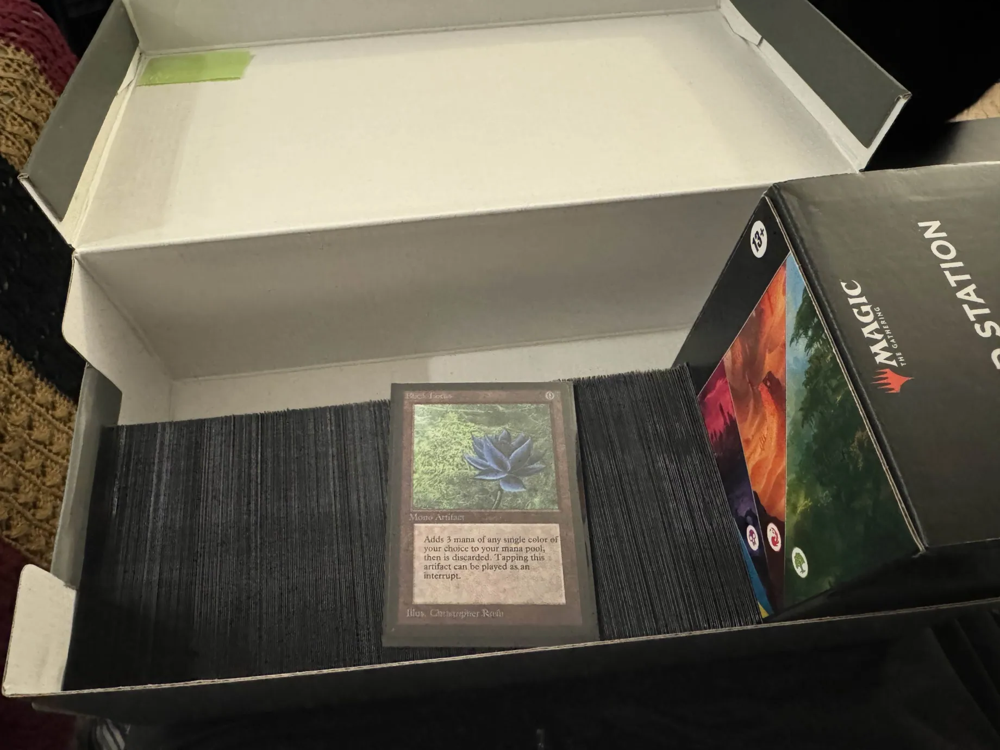

Printing MTG Proxies
Table of Contents
Printing Custom MTG Proxies
If you made the summer top 50 and come find me at a tourney I’ll give you a cool gift pic.twitter.com/lgVdEED75m
— Eryk (@Ambisinister_) September 9, 2025
A short project I did was to learn how to get custom MTG proxy cards designed and printed. This was a big hit – a lot of people messaged me about it, and I wanted to write down some of my process here so I don't forget how to do any of it later. I have lots of cool ideas on how I can push this idea even further in the future, but all in all I was very satisfied with this project.
SSBMRank 2025 Summer Proxy Cards
I've been toying around with creating little artifacts to get people excited about the ssbmrank project. My two favorite things1 about ssbmrank are:
- Highlighting really strong players, especially ones which wouldn't get too much recognition otherwise
- Highlighting a lot of the amazing photography work done by the community.
I thought a cool way to engage with these things was to print little playing cards for the top 50 players on the summer rank. I had recently read The MTG Color Wheel (& Humanity) and briefly held great interest in describing everything in terms of the mana colors in Magic: The Gathering2.
Card Design
I thought it would be a fun exercise to categorize the entire top 50 into different colors based on their playstyle. I watch a lot of melee, but this ended up being a good excuse to watch vods from top players who I don't normally watch (read: non fox players). This was a lot of fun, and I had some good conversations about it with some melee players who I knew played MTG.
At the time, I did not really know anything about MTG other than how this flavorful mana system worked. Once I had grouped all the players into colors, I tried to do some research about which cards from each color were super popular. What I ended up doing was looking at lots of cards on scryfall. Specifically, I would do searches for color:<insert color>, type:creature, and then sort by EDHREC rank3. This generally produces a list of cards which I now recognize to be usually pretty important.
I had a good time just reading tons of card text for a few days and thinking like "yeah, this seems like a lexor type of card" or "this thing just has to be hungrybox". I originally had high hopes of designing completely custom MTG cards with unique effects for every player, especially after I encountered It's Not Good's video designing a playable MTG draft set based on Yu-Gi-Oh. But I had never played Magic (or really any TCG) before, so I recognized I was totally out of my depth for something like that. I decided to just re-use normal MTG card designs just so it would be super unlikely for me to unknowingly make one player's card completely unplayable. I made a spreadsheet of cards which reminded me of specific players and I was off to the races after that.
From this point I spent a lot of time in cardconjurer, which very helpfully allowed me to import pre-existing cards as a starting point. For each player I loaded up a pre-designed card, changed the art to the SSBMRank photo, changed the artist credit to the photographer credit, and made any further adjustments from there. This took a really long time and was super tedious, but I think it was worth it for the final result. I also made a simple card back with the SSBMRank logo on it, and after a few days I had 50 cards ready to go.

Getting It Printed
The de facto way to print proxy cards in the MTG community, after doing some research, was via MakePlayingCards.com and specifically getting Custom Game Cards (63 x 88mm). I ordered a bunch in S33, and I got some S30 holographic fronts. Their website was a bit clunky to navigate, but overall I didn't really have any problems. Shipping took a few weeks, and I thought they came out great.
Proxy Vintage Cube
After spending so much time doing magic stuff for this project, I did want to learn how to play it. After completing the SSBMRank cards, I downloaded MTG Arena and started playing the game. After a few weeks I had managed to ladder all the way up to mythic rank in standard, which was a great time.
I felt like I deserved a reward for doing all of that laddering, so I decided to proxy print a 360 card vintage cube as a sort of playable trophy. I went with the Data Generated Vintage Cube, since after reading the overview I found that I agreed with all of their decisions.
Without needing to design my own custom variants of each card, I was now free to use MPC Autofill for this, which is a tool that makes this process much easier if all you want are playable proxies for specific cards. This tool is intended to make the whole process of getting proxies printed on MPC to be much more streamlined, but I think it ended up being sort of a mixed bag for me. It's really easy with this tool to just paste in your card list and get all of the cards into MPC, but the art that gets loaded by default is sometimes really weird, full of fanart / OCs / memes / other nonsense.
I ended up going through every single card in the cube (360 cards) and making sure I liked the art for all of them. This took a lot longer than I thought, since I had only played standard before so a lot of the card pool was new to me. But all in all the process was mostly the same as last time, and I thought the cards turned out great4.

Footnotes:
I like lots of the other components too! So don't be mad if you do one of the other things, you're still appreciated.
I'm sure this was annoying for my friends and family. But I'm not sorry. I need to do stuff like this to get projects like this off the ground. You'll have to put up with it, unfortunately.
I didn't really know what EDHREC rank was, but I figured it was vaguely "how popular is this card".
I went with S30 for all of them. I think a collectors eye would be able to tell them apart much easier from real cards compared to S33, but in the sleeves especially they don't feel any different from the real land cards, which were cheaper to just buy normally than to print.